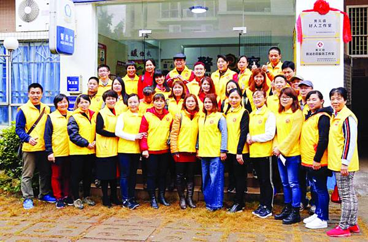

各地创新举措提供精准化志愿服务 实现志愿服务“零距离”
桂电志愿者网 日期：2018-05-18 来源：中国文明网

随着志愿服务事业的快速发展,志愿服务工作的覆盖面越来越广、受益人群也越来越多。如何让志愿服务更好地服务人民?为了提高志愿服务质量,各地利用“菜单式志愿服务”、“志愿者+APP”、设立好人工作室等多举措提供专业化、精准化志愿服务模式,让志愿服务与群众需求相对接,并形成“细水长流”常态化的工作机制。
“互联网+菜单式服务”让志愿服务更精准
搭建“互联网+”新平台,创新志愿服务参与方式,成功摸索出“互联网+志愿服务”新模式。通过互联网来发布信息,让社会和志愿者快捷有效地熟知、发起、认购志愿项目和参与社会公益、志愿服务活动,实现线上发布,线下圆梦的有效对接,达到处处有项目、实时可认领、天天有服务的效果。
北京市海淀区甘家口街道潘庄社区助老志愿服务实行“老人点单、社区下单、志愿者接单、组织评单”的“四单制”服务,解决了过去老人真实需求得不到满足,志愿服务任务分派难、分派慢等问题,受到社区老人欢迎。重庆市南岸区以政务移动客户端“智慧南岸”APP为载体,把全区志愿服务工作由“网下”搬到“掌上”。“志愿者+APP”打通志愿服务线上线下瓶颈,让志愿服务项目与需求达到智能精准对接,实现服务效用最大化。上海市闵行区为推动志愿服务工作更好服务民生,有效促进闵行区“1+4+X”志愿服务体系和邻里中心发挥平台功能、阵地作用,协调社区志愿服务供需对接落到实处,启动并实施了“社区新动力”志愿服务计划,初步形成覆盖社区志愿服务中心及站点和社区、邻里中心的志愿服务“三库一体系”,即志愿服务项目库、志愿服务阵地库、志愿服务人才库和志愿服务资源的社区融入体系,在上海市闵行区建成社区“菜单式”志愿服务新模式。如果您需要志愿服务,可以通过“文明闵行”微信公众号,点击“社区新动力”功能菜单,选择“服务菜单”申请服务,还可以提交评价,获得更贴心的志愿服务。需要什么样的志愿服务,可以到“志愿服务超市”下单了。厦门市同安区志愿服务开启“订单”模式,志愿服务队不仅“送志愿、送服务”到乡村,也致力于在乡村“种志愿、种队伍”,提升乡风文明。厦门市同安区志愿服务已进入双向选择的“2.0版本”,“星火工程”的运作模式包括志愿服务队到乡村“送志愿、送服务”,在乡村“种志愿、种队伍”,积极协助村居、社区书院孵化、培育新的志愿服务组织,开展各类活动,催生村居文明原动力,实现乡风文明。宁波市江北区着力整合学雷锋志愿服务站(点、岗)资源,建设志愿服务广场,创新推出“定时+定点+定单”服务机制,推进学雷锋志愿服务制度化常态化。“三定”服务机制主要分别为,定时:各级志愿服务广场提出“每月有,季度优”目标,固定每月5日开展活动,每季度开展一场规模较大的特色活动。定点:将志愿服务广场作为固定场地,招募志愿者,开展志愿服务活动。定(订)单:整理志愿服务项目菜单,活动开展前,征集群众志愿服务需求,提供订单式服务。武汉市借力“互联网+”快车,推进志愿服务精准对接,让公益服务时尚起来。残疾人有需求,可以在微信上发布;市民想做志愿者,可以在微信上注册“接单”……武汉市残联针对残疾人的特殊需求,开发出“武汉助残”微信平台,通过这个微信平台将残疾人需求与志愿者服务连接起来,为残疾人提供专属服务。
有效利用资源 实现志愿服务“零距离”
各地合理有效利用志愿服务资源,让志愿服务更精准,同时也真正让需要帮助的人得到了实惠、感到满意。实现志愿服务人人可为,时时可为,处处可为,传递向上向善正能量。
为使志愿服务做到“群众所需、服务所有”,厦门市金安社区摸索出了志愿服务专业化查、筛、分、建、培、用、评“七字法”,将现有的专业志愿者分成七大类服务,而七大专业类分别为心理关怀、维权调解、文化艺术、便民服务、医疗保健、安全救援和信息技术。每个专业类还有细分,例如便民服务就涵盖了家电维修、课业辅导、驾驶操作、理发美发、手工制作、就业帮扶等。不仅如此,金安社区还会定期邀请专业导师、社工对志愿者进行专业化培训,为志愿服务精准化打好基础。威海市高区田和街道利用现有资源,通过引进来与走出去相结合的方式,不断丰富社区课堂师资人才库和课程学习内容,大力开展社区公益课程,开设健康、文化、法律、安全、时政等五大专题,打造居民身边的“大学”,吸引居民广泛参与,收到了良好的效果。佛山市禅城区设立“圆梦平台”,提供精准化个性化服务,主要精准把脉困难妇女儿童的问题和需求,以需求为导向,发动和整合各种社会力量资源,建立点对点捐助平台,提供“精准化、公益化、个性化”帮扶服务的平台。惠州市文明局为惠州全国道德模范提名奖获得者、中国好人、广东好人、惠州好人设立好人工作室,以好人自身特长为基础,提供专业、精准的志愿服务,打造专业志愿服务品牌。惠州市好人工作室将专业服务进行标准化,并将专业服务标准和流程上墙,有的工作室还编印成册,如“中国好人”黄植忠司法惠民志愿服务工作室发挥调解的专长,以一种“专科医生式”的工作方法,对群众遇到的难题进行 “治疗”,创造出独特的 “调解四法”(轮流调解、迂回调解、喝茶调解和亲情调解),将矛盾纠纷化解在一线。义乌市63个机关单位组建起了123支专业志愿服务队,共计3977名党员参与报名专业志愿服务队,从政务、法律,再到教育、医疗,以及环保、建设等方面无所不包,这些志愿者们都是各行各业的技术型人才,他们运用手中技能,义务为居民服务。义乌市有一本涵盖所有专业党员志愿服务队的公益服务项目菜单,各个社区可以梳理、收集辖区居民需求,再通过“点单”的形式,来邀请专业党员志愿服务队到社区进行志愿服务。专业志愿服务队通过驻点为主、点单为辅、精准有效的专业志愿服务。
文明网说
志愿服务就在我们身边,犹如每个人的精神“富矿”,值得每个人认真挖掘和品味。志愿服务精准化更加有利于培育城市文明程度和市民文明意识,群众在不断享受优质高效的志愿服务,共同感受“人人为我,我为人人”的愉悦感,共同感受社会文明的熏陶和浸染。
【责任编辑：中国文明网】